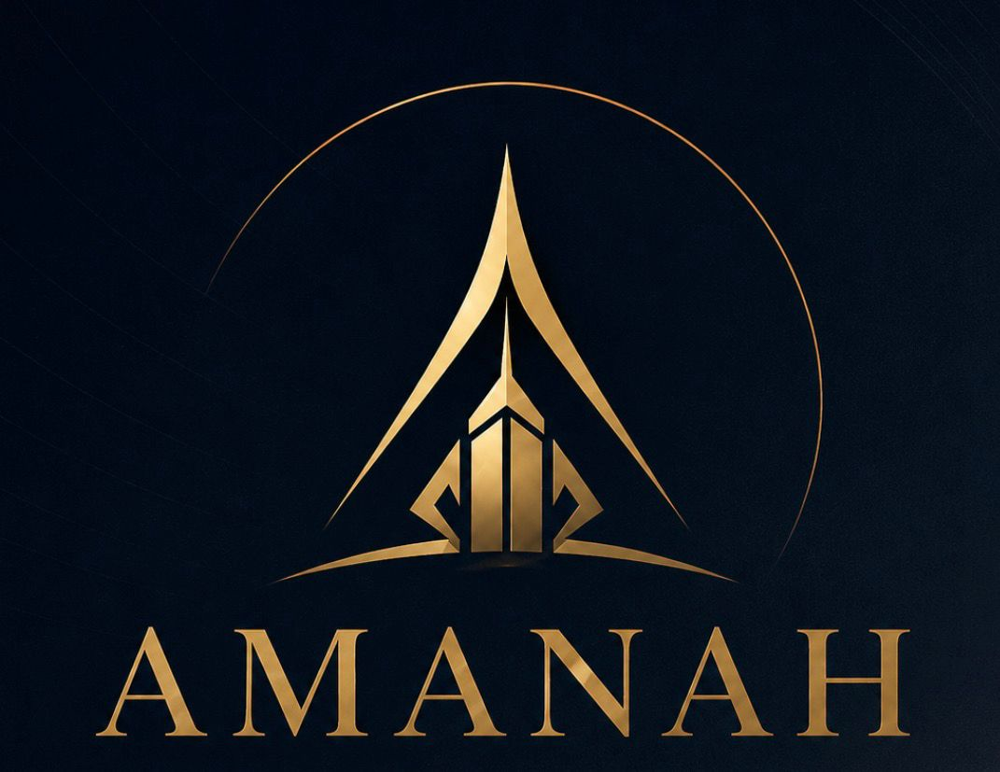

Construction & project-based companies
Businesses that deliver work through contracts, tenders, client projects, site work, subcontractors, or project-based operations.

Who We Help
Amanah Consulting is especially suited to businesses that need stronger structure around opportunities, documentation, proposals, operations, and commercial decision-making.
Businesses that deliver work through contracts, tenders, client projects, site work, subcontractors, or project-based operations.
Businesses that already have customers and activity, but need clearer internal structure, better documentation, and more professional systems.
Founders and small teams that need help structuring business models, planning documents, research, operations, and external communication.
Businesses that want to work with larger clients, organisations, NGOs, public bodies, or partners requiring stronger documentation and credibility.
Typical Problems